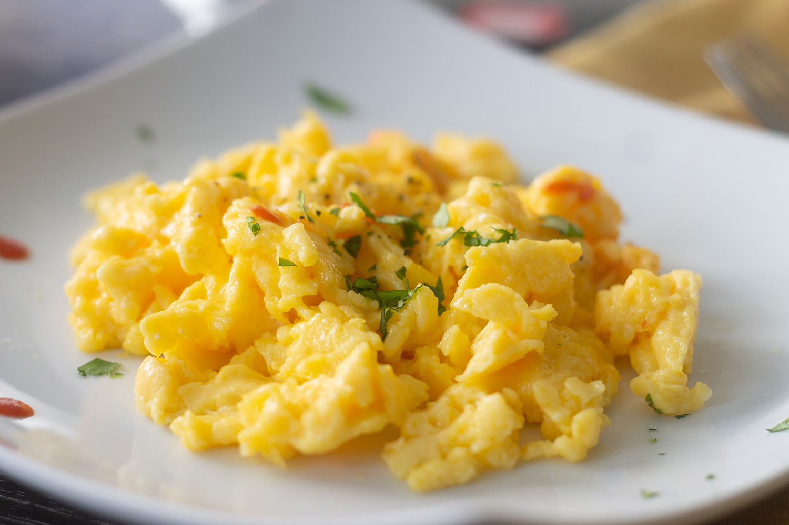

Scrambled Eggs

Perfect Easy Scrambled Eggs!
Ingredients:
- 4 eggs
- 2 tablespoons (30ml) of milk
- 1 tablespoon of butter
- Salt and pepper
Steps:
- Crack four eggs into a bowl, add 30ml (2 tbsp) of milk and a pinch of salt and black pepper.
- Beat the mixture lightly with a whisk or fork.
- Melt 1 tbsp of butter in a medium size fry pan on a low heat and when it starts foaming, pour in the eggs
and leave to set for 60-90 seconds.
- Using a spatula, gently pull the eggs from the edges of the pan into the centre. Turn and tilt the pan so
the runny eggs take up the available space and again gently pull it towards the centre. This gentle pulling
towards the centre of the pan makes lovely, light ribbons of egg.
- Remove the pan from the heat before the egg is completely set. Leave to sit for a minute or two so the egg
can gently finish cooking in its own heat.